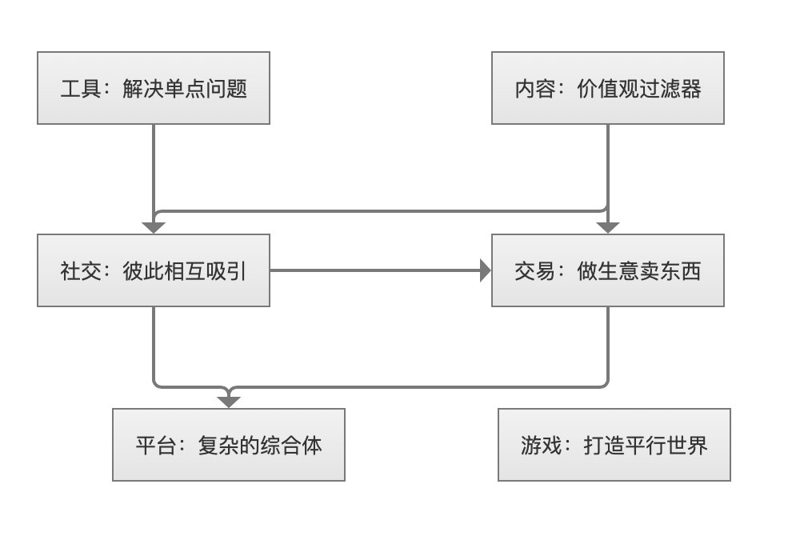

<!DOCTYPE html>
<html>
<head><meta name="generator" content="Hexo 3.8.0">
  <meta charset="utf-8">
  
  <title>常见的产品分类维度 | guowj</title>
  <meta name="viewport" content="width=device-width, initial-scale=1, maximum-scale=1">
  
  <meta name="keywords" content="用户关系角度用户需求角度用户类型角度用户形态角度">
  
  
  
  
  <meta name="description" content="&amp;nbsp;&amp;nbsp;&amp;nbsp;&amp;nbsp;&amp;nbsp;&amp;nbsp;本篇文章将从多个角度来试着对产品进行分类。通过多维度的分类，了解各种产品的特点，给自己进行定位，获知自己需要针对性地加强哪方面的能力，进一步可以用来指导自己日常的努力方向。">
<meta name="keywords" content="用户关系角度,用户需求角度,用户类型角度,用户形态角度">
<meta property="og:type" content="article">
<meta property="og:title" content="常见的产品分类维度">
<meta property="og:url" content="https://gwjacqueline.github.io/常见的产品分类维度/index.html">
<meta property="og:site_name" content="guowj">
<meta property="og:description" content="&amp;nbsp;&amp;nbsp;&amp;nbsp;&amp;nbsp;&amp;nbsp;&amp;nbsp;本篇文章将从多个角度来试着对产品进行分类。通过多维度的分类，了解各种产品的特点，给自己进行定位，获知自己需要针对性地加强哪方面的能力，进一步可以用来指导自己日常的努力方向。">
<meta property="og:locale" content="zh-CN">
<meta property="og:image" content="https://gwjacqueline.github.io/images/pm/yblj.png">
<meta property="og:updated_time" content="2019-08-12T01:25:07.942Z">
<meta name="twitter:card" content="summary">
<meta name="twitter:title" content="常见的产品分类维度">
<meta name="twitter:description" content="&amp;nbsp;&amp;nbsp;&amp;nbsp;&amp;nbsp;&amp;nbsp;&amp;nbsp;本篇文章将从多个角度来试着对产品进行分类。通过多维度的分类，了解各种产品的特点，给自己进行定位，获知自己需要针对性地加强哪方面的能力，进一步可以用来指导自己日常的努力方向。">
<meta name="twitter:image" content="https://gwjacqueline.github.io/images/pm/yblj.png">
  
    <link rel="alternate" href="/atom.xml" title="guowj" type="application/atom+xml">
  

  

  <link rel="icon" href="/css/images/mylogo.png">
  <link rel="apple-touch-icon" href="/css/images/mylogo.png">
  
    <link href="//fonts.googleapis.com/css?family=Source+Code+Pro" rel="stylesheet" type="text/css">
  
  <link href="https://fonts.googleapis.com/css?family=Open+Sans|Montserrat:700" rel="stylesheet" type="text/css">
  <link href="https://fonts.googleapis.com/css?family=Roboto:400,300,300italic,400italic" rel="stylesheet" type="text/css">
  <link href="//netdna.bootstrapcdn.com/font-awesome/4.0.3/css/font-awesome.css" rel="stylesheet">
  <style type="text/css">
    @font-face{font-family:futura-pt; src:url("../css/fonts/FuturaPTBold.otf") format("woff");font-weight:500;font-style:normal;}
    @font-face{font-family:futura-pt-light; src:url("../css/fonts/FuturaPTBook.otf") format("woff");font-weight:lighter;font-style:normal;}
    @font-face{font-family:futura-pt-italic; src:url("../css/fonts/FuturaPTBookOblique.otf") format("woff");font-weight:400;font-style:italic;}
}

  </style>
  <link rel="stylesheet" href="/css/style.css">

  <script src="/js/jquery-3.1.1.min.js"></script>
  <script src="/js/bootstrap.js"></script>

  <!-- Bootstrap core CSS -->
  <link rel="stylesheet" href="/css/bootstrap.css">

  
    <link rel="stylesheet" href="/css/dialog.css">
  

  

  
    <link rel="stylesheet" href="/css/header-post.css">
  

  
  
  
    <link rel="stylesheet" href="/css/vdonate.css">
  

</head>
</html>


  <body data-spy="scroll" data-target="#toc" data-offset="50">


  
  <div id="container">
    <div id="wrap">
      
        <header>

    <div id="allheader" class="navbar navbar-default navbar-static-top" role="navigation">
        <div class="navbar-inner">
          
          <div class="container"> 
            <button type="button" class="navbar-toggle" data-toggle="collapse" data-target=".navbar-collapse">
              <span class="sr-only">Toggle navigation</span>
              <span class="icon-bar"></span>
              <span class="icon-bar"></span>
              <span class="icon-bar"></span>
            </button>

            
              <a class="brand" style="
                 margin-top: 0px;" href="#" data-toggle="modal" data-target="#myModal">
                  
              </a>
            
            
            <div class="navbar-collapse collapse">
              <ul class="hnav navbar-nav">
                
                  <li> <a class="main-nav-link" href="/">首页</a> </li>
                
                  <li> <a class="main-nav-link" href="/archives">归档</a> </li>
                
                  <li> <a class="main-nav-link" href="/categories">分类</a> </li>
                
                  <li> <a class="main-nav-link" href="/tags">标签</a> </li>
                
                  <li><div id="search-form-wrap">

    <form class="search-form">
        <input type="text" class="ins-search-input search-form-input" placeholder>
        <button type="submit" class="search-form-submit"></button>
    </form>
    <div class="ins-search">
    <div class="ins-search-mask"></div>
    <div class="ins-search-container">
        <div class="ins-input-wrapper">
            <input type="text" class="ins-search-input" placeholder="请输入关键词...">
            <span class="ins-close ins-selectable"><i class="fa fa-times-circle"></i></span>
        </div>
        <div class="ins-section-wrapper">
            <div class="ins-section-container"></div>
        </div>
    </div>
</div>
<script>
(function (window) {
    var INSIGHT_CONFIG = {
        TRANSLATION: {
            POSTS: '文章',
            PAGES: '页面',
            CATEGORIES: '分类',
            TAGS: '标签',
            UNTITLED: '(无标题)',
        },
        ROOT_URL: '/',
        CONTENT_URL: '/content.json',
    };
    window.INSIGHT_CONFIG = INSIGHT_CONFIG;
})(window);
</script>
<script src="/js/insight.js"></script>

</div></li>
            </ul></div>
          </div>
                
      </div>
    </div>

</header>


      
            
      <div id="content" class="outer">
        
          <section id="main" style="float:none;"><article id="post-常见的产品分类维度" style="width: 75%; float:left;" class="article article-type-post" itemscope itemprop="blogPost">
  <div id="articleInner" class="article-inner">
    
    
      <header class="article-header">
        
  
    <h1 class="thumb" itemprop="name">
      常见的产品分类维度
    </h1>
  

      </header>
    
    <div class="article-meta">
      
	<a href="/常见的产品分类维度/" class="article-date">
	  <time datetime="2019-08-11T08:11:31.000Z" itemprop="datePublished">2019-08-11</time>
	</a>

      
    <a class="article-category-link" href="/categories/产品/">产品</a>

      
	<a class="article-views">
	<span id="busuanzi_container_page_pv">
		阅读量<span id="busuanzi_value_page_pv"></span>
	</span>
	</a>

      

    </div>
    <div class="article-entry" itemprop="articleBody">
      
        <blockquote>
<p>&nbsp;&nbsp;&nbsp;&nbsp;&nbsp;&nbsp;本篇文章将从多个角度来试着对产品进行分类。通过多维度的分类，了解各种产品的特点，给自己进行定位，获知自己需要针对性地加强哪方面的能力，进一步可以用来指导自己日常的努力方向。</p>
</blockquote>
<a id="more"></a>
<h2 id="用户关系角度"><a href="#用户关系角度" class="headerlink" title="用户关系角度"></a>用户关系角度</h2><p>&nbsp;&nbsp;&nbsp;&nbsp;&nbsp;&nbsp;从产品与用户的关系角度，分为三类：<strong>单点、单边、多边。其中多边又可以分为双边、单边等</strong>。</p>
<h3 id="单点-启动最简单"><a href="#单点-启动最简单" class="headerlink" title="单点:启动最简单"></a>单点:启动最简单</h3><p>&nbsp;&nbsp;&nbsp;&nbsp;&nbsp;&nbsp;计算机是典型的单点用户型产品。只要有一个用户使用，就能产生完整的用户价值。虽然启动简单，但没法形成网络效应，用户转移成本很低。</p>
<h3 id="单边：可能有网络效应"><a href="#单边：可能有网络效应" class="headerlink" title="单边：可能有网络效应"></a>单边：可能有网络效应</h3><p>&nbsp;&nbsp;&nbsp;&nbsp;&nbsp;&nbsp;电话是个典型的单边用户型产品，需要有一群人同时使用，只有一个人有电话是没有意义的，使用这个产品的用户越多，每个用户的价值越大，产品也就有了网络效应，可以像黑洞一样把用户吸引过来。</p>
<h3 id="多边-平台级，壁垒最高"><a href="#多边-平台级，壁垒最高" class="headerlink" title="多边:平台级，壁垒最高"></a>多边:平台级，壁垒最高</h3><p>&nbsp;&nbsp;&nbsp;&nbsp;&nbsp;&nbsp;多边用户型产品一般都是平台级产品，需要几群不同的人一起使用才能产生价值。最典型的就是知乎这个问答网站————由提问者、回答者、围观者构成三边，沉淀了很多内容和关系，任何一个类似的产品，就算在功能上完全抄袭，也很难把用户吸引过去。<strong>这种产品一旦启动起来，惯性也更大，壁垒也更高，更难被干掉</strong>，而且市场也更倾向于集中，更容易出现垄断巨头。</p>
<p>&nbsp;&nbsp;&nbsp;&nbsp;&nbsp;&nbsp;明白了用户关系角度，我们看下用户需求角度，把这两个角度结合起来，会更容易理解。</p>
<h2 id="用户需求角度"><a href="#用户需求角度" class="headerlink" title="用户需求角度"></a>用户需求角度</h2><p>&nbsp;&nbsp;&nbsp;&nbsp;&nbsp;&nbsp;从用户需求角度，把产品分为 6 大类：<strong>工具、内容、社交、交易、平台、游戏</strong>。这个界限并没有那么严格，很多产品是多个分类的混合体。</p>
<h3 id="工具：解决单点问题"><a href="#工具：解决单点问题" class="headerlink" title="工具：解决单点问题"></a>工具：解决单点问题</h3><p>&nbsp;&nbsp;&nbsp;&nbsp;&nbsp;&nbsp;工具用来解决特定的单点问题，可以”用完即走。比如典型的计算器、翻译、看天气的应用。这种产品启动容易，可以快速解决流量问题，但是缺少用户黏性。用户对工具的态度是”有事儿了才会想到你“，甚至希望用的时候最好不要注册。其基本的产品逻辑是：<strong>用户要解决特定问题 → 需要做一个任务 → 使用工具 → 达成目标</strong></p>
<p>&nbsp;&nbsp;&nbsp;&nbsp;&nbsp;&nbsp;对于用户而言，用哪个工具看天气区别很小，从一个工具换到另一个工具基本没什么障碍。</p>
<p>&nbsp;&nbsp;&nbsp;&nbsp;&nbsp;&nbsp;于是，工具都想找理由让用户留下点东西，比如个人信息、用户关系等等，以便生成用户画像，然后针对性地提供个性化的服务，让用户更有可能黏在这个产品上。但是让用户留下信息不能采用强制措施，应该鼓励和诱导，让用户因留信息的行为而明显收益。比如今日头条根据算法推送喜欢的消息，大姨妈、Keep 让用户与用户之间互动，留下用户关系，渐渐从工具变成社区。</p>
<p>&nbsp;&nbsp;&nbsp;&nbsp;&nbsp;&nbsp;先把流量做起来，再解决”来的是谁，并抓住他们“，这是工具”从流量到用户“的转化套路。</p>
<p>&nbsp;&nbsp;&nbsp;&nbsp;&nbsp;&nbsp;盈利模式层面，好的工具可以直接卖钱，但容易被”“别的免费工具，作为引流手段“作为市场策略干掉。所以，工具通常是一种比较<strong>初级</strong>的产品形态。</p>
<h3 id="内容：价值观过滤器"><a href="#内容：价值观过滤器" class="headerlink" title="内容：价值观过滤器"></a>内容：价值观过滤器</h3><p>&nbsp;&nbsp;&nbsp;&nbsp;&nbsp;&nbsp;<strong>必须提供有价值的信息，如果用户想打发时间，那么”可打发时间“也算一种价值。</strong></p>
<p>&nbsp;&nbsp;&nbsp;&nbsp;&nbsp;&nbsp;内容产品和用户的关系也多是单点的，表现为单向和中心化的信息传递，由供应方生产内容，提供给用户消费。像一些视频网站，就是常见的内容形态。</p>
<p>&nbsp;&nbsp;&nbsp;&nbsp;&nbsp;&nbsp;这种产品的基本逻辑是：主动（搜索、订阅等）或被动（推送、推荐等）接触内容 → 消费内容 → 消费后行为（评论、点赞、打赏等互动，以及分享、传播等扩散行为）。</p>
<p>&nbsp;&nbsp;&nbsp;&nbsp;&nbsp;&nbsp;单纯的内容，很难独立形成商业闭环，传统的变现模式是广告，相对低效，只做了一层”导流“工作，把用户卖给别人，后面发生什么与你无关。</p>
<p>&nbsp;&nbsp;&nbsp;&nbsp;&nbsp;&nbsp;<strong>新的商业模式不仅可以”卖用户“</strong>，还可以卖东西。因为内容是一种特殊的工具，使用这种工具的人，更有共性，筛选出一些三观接近的人后，就更容易做出用户画像。比如得到 APP，他们通过优质的内容，大大降低了获取流量和用户成本，接下来各显神通从用户身上获取收入。很多人选择<strong>直接交易</strong>，比如逻辑思维像热爱知识的用户卖书，还有一些，采用<strong>更直接的”供养“变现</strong>，用高级的内容筛选出”认可好内容本身就值钱，并且有支付能力和意愿“的用户，直接卖内容本身。</p>
<h3 id="社交：彼此相互吸引"><a href="#社交：彼此相互吸引" class="headerlink" title="社交：彼此相互吸引"></a>社交：彼此相互吸引</h3><p>&nbsp;&nbsp;&nbsp;&nbsp;&nbsp;&nbsp;用户与用户互相玩，彼此吸引并建立关系，最终因此而留下来。</p>
<p>&nbsp;&nbsp;&nbsp;&nbsp;&nbsp;&nbsp;社交产品是一个去中心化的产物。常见的模式是单边启动，需要同时有一大群人一起来用，才有价值，人越多价值越大。但也有时候是双边启动，比如婚介类的社交应用，需要同时有一群美女和一群帅哥，才能玩的转。</p>
<p>&nbsp;&nbsp;&nbsp;&nbsp;&nbsp;&nbsp;社交产品最大的优势是用户粘性相对高，最大的劣势是离钱比较远。</p>
<p>&nbsp;&nbsp;&nbsp;&nbsp;&nbsp;&nbsp;资本环境火热的时候，人们乐于投资长链条的产品模式，比如：<strong>先做个工具获取用户，再培育出一个社区留住用户，再做电商，通过交易变现</strong>。资本收紧的时候，人们想要更快的看到收益，常用的一些直接用社交变现的玩法，有<strong>卖虚拟礼物、道具，比如花钱才能看到对方的联系信息，也有手握流量卖广告，更多的是转电算，给用户买东西</strong></p>
<h3 id="交易：做生意卖东西"><a href="#交易：做生意卖东西" class="headerlink" title="交易：做生意卖东西"></a>交易：做生意卖东西</h3><p>&nbsp;&nbsp;&nbsp;&nbsp;&nbsp;&nbsp;线上的交易，就是电商和 O2O 概念下的各种收费服务。</p>
<p>&nbsp;&nbsp;&nbsp;&nbsp;&nbsp;&nbsp;做交易的产品分两种，有的是真正的做”交易“，即自己卖货，这种相对容易启动，属于 B2C 模式。有些在做交易平台，自己不卖东西，通过买卖双方在平台上成交。”交易平台“是典型的双边启动，需要足够多的卖家和买家，才能跑起来。</p>
<p>&nbsp;&nbsp;&nbsp;&nbsp;&nbsp;&nbsp;做交易类的产品就不得不提”供应链“这个词。如何获取买家，如何做品控等等。</p>
<h3 id="平台：复杂的综合体"><a href="#平台：复杂的综合体" class="headerlink" title="平台：复杂的综合体"></a>平台：复杂的综合体</h3><p>&nbsp;&nbsp;&nbsp;&nbsp;&nbsp;&nbsp;这是一种同时满足多种角色的产品形态，也可以说是”生态“。</p>
<p>&nbsp;&nbsp;&nbsp;&nbsp;&nbsp;&nbsp;如今，很少有只单纯满足一种用户需求的产品了。而平台产品就是最典型的综合体，里面可能有工具、内容、社交、交易、游戏等各种元素。比如微信。</p>
<p>&nbsp;&nbsp;&nbsp;&nbsp;&nbsp;&nbsp;平台的竞争优势，不在于 IT 系统本身，而在于平台的各种用户角色在平台上内容、关系等沉淀。</p>
<h3 id="游戏：打造平行世界"><a href="#游戏：打造平行世界" class="headerlink" title="游戏：打造平行世界"></a>游戏：打造平行世界</h3><p>&nbsp;&nbsp;&nbsp;&nbsp;&nbsp;&nbsp;游戏不仅仅是一个手机上无聊打发时间的小东西，游戏里面可以融合社交、交易等元素，往大了想，游戏甚至可以理解为时在创造平行世界，释放人类富余生产力。</p>
<blockquote>
<p>&nbsp;&nbsp;&nbsp;&nbsp;&nbsp;&nbsp;最后小结一条常见的产品发展路径，把上面说到的几种需求串起来。从一个小工具单点启动，快速获取用户，然后让这些用户彼此吸引，留下个人信息和用户关系，转社交，黏住他们；或者从内容转社交，建立互动探讨的机制；接着设法转交易，给他们卖一些符合调性的东西；继而引入各种合作方，成为平台…越往后想象空间越大。</p>
</blockquote>
<div align="center"><br>  <br></div>

<h2 id="用户类型角度"><a href="#用户类型角度" class="headerlink" title="用户类型角度"></a>用户类型角度</h2><h3 id="企业-VS-个人"><a href="#企业-VS-个人" class="headerlink" title="企业 VS 个人"></a>企业 VS 个人</h3><p>具体请看之前的文章<a href="https://gwjacqueline.github.io/toB%E4%BA%A7%E5%93%81%E5%92%8CtoC%E4%BA%A7%E5%93%81%E7%9A%84%E5%8C%BA%E5%88%AB/">toB 产品和 toC 产品的区别</a></p>
<h3 id="群体-VS-个人"><a href="#群体-VS-个人" class="headerlink" title="群体 VS 个人"></a>群体 VS 个人</h3><p>&nbsp;&nbsp;&nbsp;&nbsp;&nbsp;&nbsp;一个典型的 OA 系统，一个 B2B 的供应链的工具，需要上下游一起用，才能产生效果，而 2C 的产品经常一个人用就好了，比如播放器看电影，浏览器上网。</p>
<h3 id="工作-VS-生活"><a href="#工作-VS-生活" class="headerlink" title="工作 VS 生活"></a>工作 VS 生活</h3><p>&nbsp;&nbsp;&nbsp;&nbsp;&nbsp;&nbsp;2B 的产品是生产资料，2C 的产品是生活资料。基本上，后台产品偏 2B，前台产品偏 2C。生产工具的用户量通常不大，多为熟练用户，生活工具的用户量偏大，多为小白。于是有了 2B 重商业价值，2C 重用户体验。</p>
<h3 id="男人-VS-女人"><a href="#男人-VS-女人" class="headerlink" title="男人 VS 女人"></a>男人 VS 女人</h3><p>&nbsp;&nbsp;&nbsp;&nbsp;&nbsp;&nbsp;2B 像男人，2C 像女人，男人在乎目的与结果，女人在乎过程与感受。2B 的产品主要有以下四个分类：</p>
<ul>
<li>B2D，云储存、大数据等开发者服务，帮助开发者提升效率的基础设施</li>
<li>SaaS1.0，通用管理型 SaaS，是传统意义上的管理软件</li>
<li>B2B，垂直行业交易平台，是信息撮合+在线成交</li>
<li>SaaS2.0，垂直行业 SaaS 工具+交易</li>
</ul>
<h2 id="产品形态角度"><a href="#产品形态角度" class="headerlink" title="产品形态角度"></a>产品形态角度</h2><ul>
<li>BS 结构：大部分工作在服务端，客户端借助一个浏览器来做展示，相比如客户端，有跨平台的优势，不要 Window、Mac、Ios、Android 分开做。</li>
<li>CS 结构啊；需要安装客户端，还会有一个服务端。更新麻烦</li>
<li>软硬结合：形式复杂，如果硬件有 Bug，要么召回，要么变废品。做到 6 个月左右升级一次就很快了</li>
<li>大实体：有软硬件更有服务。这种产品服务比重占的较大。比如 4S 店，不仅有复杂的实体、行车电脑系统和应用软件，还有复杂的服务体系。这样的产品，只能以年为单位缓慢进化</li>
</ul>
<p>这四种形式的规律是：前面的轻，做起来快，迭代周期短，试错成本低，对质量要求没有那么高，有问题容易改正，当然，相应的进入壁垒也就比较低<br>。顺着这个话题，提下关于用 Native（Client）还是 Web（Browser）更好，以下也总结了四条规律。</p>
<ul>
<li>偏交互的用 Native，偏浏览的用 Web</li>
<li>已稳定的用 Native，试错中的用 Web</li>
<li>访问硬件的用 Native，信息展示的用 Web</li>
<li>核心功能用 Native，周边辅助用 Web</li>
<li>变化少的用 Native，经常变的用 Web</li>
</ul>
<h2 id="各种其他角度"><a href="#各种其他角度" class="headerlink" title="各种其他角度"></a>各种其他角度</h2><h3 id="行业分类角度"><a href="#行业分类角度" class="headerlink" title="行业分类角度"></a>行业分类角度</h3><h3 id="盈利模式角度"><a href="#盈利模式角度" class="headerlink" title="盈利模式角度"></a>盈利模式角度</h3><p>分为两大类：</p>
<ul>
<li>卖货的行当：直接向用户要钱</li>
<li>卖人的行当：即 2B 的抽水模式，主要向企业单位或信息提供者收取费用</li>
</ul>
<p>卖货的基础是货要好，卖人的基础是人要多，但人多的本质还是产品好</p>
<h3 id="关键资源角度"><a href="#关键资源角度" class="headerlink" title="关键资源角度"></a>关键资源角度</h3><p>不同产品能不能成，需要的关键资源不同，主要有以下五种。</p>
<ul>
<li>资本驱动：有些行业没有足够的钱无法入场，比如补贴大战</li>
<li>技术驱动：拥有核心技术能力，成为别人无法模仿的壁垒</li>
<li>产品体验</li>
<li>运营服务</li>
<li>垄断资源：比如 12306</li>
</ul>
<h3 id="行业成熟角度"><a href="#行业成熟角度" class="headerlink" title="行业成熟角度"></a>行业成熟角度</h3><p>&nbsp;&nbsp;&nbsp;&nbsp;&nbsp;&nbsp;这个行业是属于新兴的还是成熟的，对应着产品生命周期的不同阶段，产品的侧重点也不同。</p>

      
    </div>
    <footer class="article-footer">
      
        <div id="donation_div"></div>

<script src="/js/vdonate.js"></script>
<script>
var a = new Donate({
  title: '如果觉得我的文章对您有用，请随意打赏。您的支持将鼓励我继续创作!', // 可选参数，打赏标题
  btnText: '打赏支持', // 可选参数，打赏按钮文字
  el: document.getElementById('donation_div'),
  wechatImage: '../images/wx.jpeg',
  alipayImage: '../images/zfb.jpg'
});
</script>
      
      
      <div>
        <ul class="post-copyright">
          <li class="post-copyright-author">
          <strong>本文作者:  </strong>guowj
          </li>
          <li class="post-copyright-link">
          <strong>本文链接:  </strong>
          <a href="/常见的产品分类维度/" target="_blank" title="常见的产品分类维度">https://gwjacqueline.github.io/常见的产品分类维度/</a>
          </li>
          <li class="post-copyright-license">
            <strong>版权声明:   </strong>
            本博客所有文章除特别声明外，均采用 <a rel="license" href="https://creativecommons.org/licenses/by-nc-nd/4.0/" target="_blank" title="Attribution-NonCommercial-NoDerivatives 4.0 International (CC BY-NC-ND 4.0)">CC BY-NC-ND 4.0</a>
            许可协议。转载请注明出处
          </li>
         
        </ul>
<div>
</div></div>
      
      
        
	<div id="comment">
		<!-- 来必力City版安装代码 -->
		<div id="lv-container" data-id="city" data-uid="MTAyMC80MzU1OS8yMDA5OA==" ">
		<script type="text/javascript">
		   (function(d, s) {
		       var j, e = d.getElementsByTagName(s)[0];

		       if (typeof LivereTower === 'function') { return; }

		       j = d.createElement(s);
		       j.src = 'https://cdn-city.livere.com/js/embed.dist.js';
		       j.async = true;

		       e.parentNode.insertBefore(j, e);
		   })(document, 'script');
		</script>
		<noscript>为正常使用来必力评论功能请激活JavaScript</noscript>
		</div>
		<!-- City版安装代码已完成 -->
	</div>


      
      
        
  <ul class="article-tag-list"><li class="article-tag-list-item"><a class="article-tag-list-link" href="/tags/用户关系角度/">用户关系角度</a></li><li class="article-tag-list-item"><a class="article-tag-list-link" href="/tags/用户形态角度/">用户形态角度</a></li><li class="article-tag-list-item"><a class="article-tag-list-link" href="/tags/用户类型角度/">用户类型角度</a></li><li class="article-tag-list-item"><a class="article-tag-list-link" href="/tags/用户需求角度/">用户需求角度</a></li></ul>

      

    </footer>
  </div>
  
    
<nav id="article-nav">
  
    <a href="/积分系统的搭建/" id="article-nav-newer" class="article-nav-link-wrap">
      <strong class="article-nav-caption">上一篇</strong>
      <div class="article-nav-title">
        
          积分系统的搭建
        
      </div>
    </a>
  
  
    <a href="/聊聊用户分类的方法/" id="article-nav-older" class="article-nav-link-wrap">
      <strong class="article-nav-caption">下一篇</strong>
      <div class="article-nav-title">聊聊用户分类的方法</div>
    </a>
  
</nav>

  
</article>

<!-- Table of Contents -->

  <aside id="toc-sidebar">
    <div id="toc" class="toc-article">
    <strong class="toc-title">文章目录</strong>
    
        <ol class="nav"><li class="nav-item nav-level-2"><a class="nav-link" href="#用户关系角度"><span class="nav-number">1.</span> <span class="nav-text">用户关系角度</span></a><ol class="nav-child"><li class="nav-item nav-level-3"><a class="nav-link" href="#单点-启动最简单"><span class="nav-number">1.1.</span> <span class="nav-text">单点:启动最简单</span></a></li><li class="nav-item nav-level-3"><a class="nav-link" href="#单边：可能有网络效应"><span class="nav-number">1.2.</span> <span class="nav-text">单边：可能有网络效应</span></a></li><li class="nav-item nav-level-3"><a class="nav-link" href="#多边-平台级，壁垒最高"><span class="nav-number">1.3.</span> <span class="nav-text">多边:平台级，壁垒最高</span></a></li></ol></li><li class="nav-item nav-level-2"><a class="nav-link" href="#用户需求角度"><span class="nav-number">2.</span> <span class="nav-text">用户需求角度</span></a><ol class="nav-child"><li class="nav-item nav-level-3"><a class="nav-link" href="#工具：解决单点问题"><span class="nav-number">2.1.</span> <span class="nav-text">工具：解决单点问题</span></a></li><li class="nav-item nav-level-3"><a class="nav-link" href="#内容：价值观过滤器"><span class="nav-number">2.2.</span> <span class="nav-text">内容：价值观过滤器</span></a></li><li class="nav-item nav-level-3"><a class="nav-link" href="#社交：彼此相互吸引"><span class="nav-number">2.3.</span> <span class="nav-text">社交：彼此相互吸引</span></a></li><li class="nav-item nav-level-3"><a class="nav-link" href="#交易：做生意卖东西"><span class="nav-number">2.4.</span> <span class="nav-text">交易：做生意卖东西</span></a></li><li class="nav-item nav-level-3"><a class="nav-link" href="#平台：复杂的综合体"><span class="nav-number">2.5.</span> <span class="nav-text">平台：复杂的综合体</span></a></li><li class="nav-item nav-level-3"><a class="nav-link" href="#游戏：打造平行世界"><span class="nav-number">2.6.</span> <span class="nav-text">游戏：打造平行世界</span></a></li></ol></li><li class="nav-item nav-level-2"><a class="nav-link" href="#用户类型角度"><span class="nav-number">3.</span> <span class="nav-text">用户类型角度</span></a><ol class="nav-child"><li class="nav-item nav-level-3"><a class="nav-link" href="#企业-VS-个人"><span class="nav-number">3.1.</span> <span class="nav-text">企业 VS 个人</span></a></li><li class="nav-item nav-level-3"><a class="nav-link" href="#群体-VS-个人"><span class="nav-number">3.2.</span> <span class="nav-text">群体 VS 个人</span></a></li><li class="nav-item nav-level-3"><a class="nav-link" href="#工作-VS-生活"><span class="nav-number">3.3.</span> <span class="nav-text">工作 VS 生活</span></a></li><li class="nav-item nav-level-3"><a class="nav-link" href="#男人-VS-女人"><span class="nav-number">3.4.</span> <span class="nav-text">男人 VS 女人</span></a></li></ol></li><li class="nav-item nav-level-2"><a class="nav-link" href="#产品形态角度"><span class="nav-number">4.</span> <span class="nav-text">产品形态角度</span></a></li><li class="nav-item nav-level-2"><a class="nav-link" href="#各种其他角度"><span class="nav-number">5.</span> <span class="nav-text">各种其他角度</span></a><ol class="nav-child"><li class="nav-item nav-level-3"><a class="nav-link" href="#行业分类角度"><span class="nav-number">5.1.</span> <span class="nav-text">行业分类角度</span></a></li><li class="nav-item nav-level-3"><a class="nav-link" href="#盈利模式角度"><span class="nav-number">5.2.</span> <span class="nav-text">盈利模式角度</span></a></li><li class="nav-item nav-level-3"><a class="nav-link" href="#关键资源角度"><span class="nav-number">5.3.</span> <span class="nav-text">关键资源角度</span></a></li><li class="nav-item nav-level-3"><a class="nav-link" href="#行业成熟角度"><span class="nav-number">5.4.</span> <span class="nav-text">行业成熟角度</span></a></li></ol></li></ol>
    
    </div>
  </aside>

</section>
        
      </div>
      
      <footer id="footer">
  

  <div class="container">
      	<div class="row">
	      <!--<p> Powered by <a href="http://hexo.io/" target="_blank">Hexo</a> and <a href="https://github.com/iTimeTraveler/hexo-theme-hiker" target="_blank">Hexo-theme-hiker</a> </p>-->
	      <p id="copyRightEn">Copyright &copy;2019 guowj All Rights Reserved.</p>
	      
	      
    		<p class="busuanzi_uv">
				访客数 : <span id="busuanzi_value_site_uv"></span> |  
				访问量 : <span id="busuanzi_value_site_pv"></span>
		    </p>
  		   
		</div>

		
  </div>
</footer>


<!-- min height -->

<script>
    var wrapdiv = document.getElementById("wrap");
    var contentdiv = document.getElementById("content");
    var allheader = document.getElementById("allheader");

    wrapdiv.style.minHeight = document.body.offsetHeight + "px";
    if (allheader != null) {
      contentdiv.style.minHeight = document.body.offsetHeight - allheader.offsetHeight - document.getElementById("footer").offsetHeight + "px";
    } else {
      contentdiv.style.minHeight = document.body.offsetHeight - document.getElementById("footer").offsetHeight + "px";
    }
</script>
    </div>
    <!-- <nav id="mobile-nav">
  
    <a href="/" class="mobile-nav-link">Home</a>
  
    <a href="/archives" class="mobile-nav-link">Archives</a>
  
    <a href="/categories" class="mobile-nav-link">Categories</a>
  
    <a href="/tags" class="mobile-nav-link">Tags</a>
  
</nav> -->
    

<!-- mathjax config similar to math.stackexchange -->

<script type="text/x-mathjax-config">
  MathJax.Hub.Config({
    tex2jax: {
      inlineMath: [ ['$','$'], ["\\(","\\)"] ],
      processEscapes: true
    }
  });
</script>

<script type="text/x-mathjax-config">
    MathJax.Hub.Config({
      tex2jax: {
        skipTags: ['script', 'noscript', 'style', 'textarea', 'pre', 'code']
      }
    });
</script>

<script type="text/x-mathjax-config">
    MathJax.Hub.Queue(function() {
        var all = MathJax.Hub.getAllJax(), i;
        for(i=0; i < all.length; i += 1) {
            all[i].SourceElement().parentNode.className += ' has-jax';
        }
    });
</script>

<script type="text/javascript" src="https://cdnjs.cloudflare.com/ajax/libs/mathjax/2.7.1/MathJax.js?config=TeX-AMS-MML_HTMLorMML">
</script>


  <link rel="stylesheet" href="/fancybox/jquery.fancybox.css">
  <script src="/fancybox/jquery.fancybox.pack.js"></script>


<script src="/js/scripts.js"></script>


  <script src="/js/dialog.js"></script>


	<div style="display: none;">
    <script src="https://s95.cnzz.com/z_stat.php?id=1260716016&web_id=1260716016" language="JavaScript"></script>
  </div>


	<script async src="//busuanzi.ibruce.info/busuanzi/2.3/busuanzi.pure.mini.js">
	</script>


  </div>

  <div class="modal fade" id="myModal" tabindex="-1" role="dialog" aria-labelledby="myModalLabel" aria-hidden="true" style="display: none;">
  <div class="modal-dialog">
    <div class="modal-content">
      <div class="modal-header">
        <h2 class="modal-title" id="myModalLabel">设置</h2>
      </div>
      <hr style="margin-top:0px; margin-bottom:0px; width:80%; border-top: 3px solid #000;">
      <hr style="margin-top:2px; margin-bottom:0px; width:80%; border-top: 1px solid #000;">


      <div class="modal-body">
          <div style="margin:6px;">
            <a data-toggle="collapse" data-parent="#accordion" href="#collapseOne" onclick="javascript:setFontSize();" aria-expanded="true" aria-controls="collapseOne">
              正文字号大小
            </a>
          </div>
          <div id="collapseOne" class="panel-collapse collapse" role="tabpanel" aria-labelledby="headingOne">
          <div class="panel-body">
            您已调整页面字体大小
          </div>
        </div>
      


          <div style="margin:6px;">
            <a data-toggle="collapse" data-parent="#accordion" href="#collapseTwo" onclick="javascript:setBackground();" aria-expanded="true" aria-controls="collapseTwo">
              夜间护眼模式
            </a>
        </div>
          <div id="collapseTwo" class="panel-collapse collapse" role="tabpanel" aria-labelledby="headingTwo">
          <div class="panel-body">
            夜间模式已经开启，再次单击按钮即可关闭 
          </div>
        </div>

        <div>
            <a data-toggle="collapse" data-parent="#accordion" href="#collapseThree" aria-expanded="true" aria-controls="collapseThree">&nbsp;&nbsp;&nbsp;&nbsp;&nbsp;&nbsp;关 于&nbsp;&nbsp;&nbsp;&nbsp;&nbsp;&nbsp;</a>
        </div>
         <div id="collapseThree" class="panel-collapse collapse" role="tabpanel" aria-labelledby="headingThree">
          <div class="panel-body">
            guowj
          </div>
          <div class="panel-body">
            Copyright © 2019 guowj All Rights Reserved.
          </div>
        </div>
      </div>


      <hr style="margin-top:0px; margin-bottom:0px; width:80%; border-top: 1px solid #000;">
      <hr style="margin-top:2px; margin-bottom:0px; width:80%; border-top: 3px solid #000;">
      <div class="modal-footer">
        <button type="button" class="close" data-dismiss="modal" aria-label="Close"><span aria-hidden="true">×</span></button>
      </div>
    </div>
  </div>
</div>
  
  <a id="rocket" href="#top" class=""></a>
  <script type="text/javascript" src="/js/totop.js?v=1.0.0" async=""></script>
  
    <a id="menu-switch"><i class="fa fa-bars fa-lg"></i></a>
  
</body>
</html>